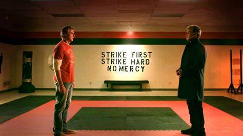

Το Cobra Kai άναψε το πράσινο φως στις 4 Αυγούστου 2017, με δέκα μισάωρα επεισόδια, σε σενάριο και εκτελεστική παραγωγή των Josh Heald, Jon Hurwitz και Hayden Schlossberg. Αν και η σειρά έλαβε προσφορές από τα Netflix, Amazon, Hulu και AMC, τελικά κατέληξε στη συνδρομητική υπηρεσία YouTube Red. Στο τρίο συμμετείχαν οι εκτελεστικοί παραγωγοί James Lassiter και Caleeb Pinkett της Overbrook Entertainment σε συνεργασία με την Sony Pictures Television. Το YouTube Premium κυκλοφόρησε την πρώτη σεζόν στις 2 Μαΐου 2018 και τη δεύτερη σεζόν στις 24 Απριλίου 2019. Οι δημιουργοί της σειράς εξερεύνησαν τη μετάβαση σε άλλη πλατφόρμα πριν από την πρεμιέρα της δεύτερης σεζόν, αλλά η συμφωνία δεν ολοκληρώθηκε.
Η τρίτη σεζόν δημιουργήθηκε για το YouTube και αρχικά είχε προγραμματιστεί να κυκλοφορήσει το 2020. Ωστόσο, στις 28 Μαΐου 2020, η Deadline Hollywood ανακοίνωσε ότι η σειρά θα εγκαταλείψει το YouTube και θα μετακομίσει σε άλλη πλατφόρμα ροής, εν όψει της πρεμιέρας της τρίτης σεζόν. Καθώς το YouTube δεν ενδιαφέρθηκε να ανανεώσει τη σειρά για τέταρτη σεζόν, οι παραγωγοί ήθελαν να βρουν έναν χώρο ροής που θα άφηνε ανοιχτή αυτή την επιλογή.
Στις 22 Ιουνίου 2020, ανακοινώθηκε ότι η εκπομπή θα μεταφερόταν στο Netflix, παίρνοντας μαζί τους την τρίτη σεζόν. Το Netflix κυκλοφόρησε τις δύο πρώτες σεζόν από το YouTube στις 28 Αυγούστου 2020 και τη νέα τρίτη σεζόν την 1η Ιανουαρίου 2021. Στις 2 Οκτωβρίου 2020, το Netflix ανακοίνωσε πρόωρη ανανέωση για μια τέταρτη σεζόν, πριν από την κυκλοφορία της 3ης σεζόν. Ως μέρος ενός βίντεο και μιας επιστολής προς τους μετόχους του τον Απρίλιο του 2021, ο συν-διευθύνων σύμβουλος και διευθύνων σύμβουλος περιεχομένου του Netflix, Ted Sarandos επιβεβαίωσε ότι η τέταρτη σεζόν του Cobra Kai θα εμφανιστεί κάποια στιγμή στο τέταρτο τρίμηνο του 2021. Στις 27 Αυγούστου 2021, πριν από στην πρεμιέρα της τέταρτης σεζόν, το Netflix ανανέωσε τη σειρά για πέμπτη σεζόν, η οποία έκανε πρεμιέρα στις 9 Σεπτεμβρίου 2022.
